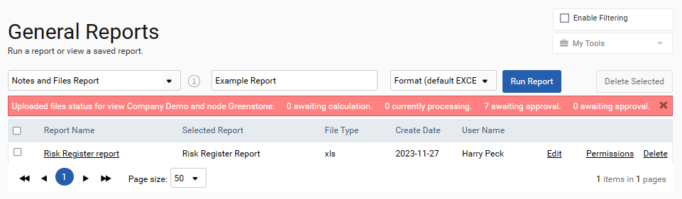
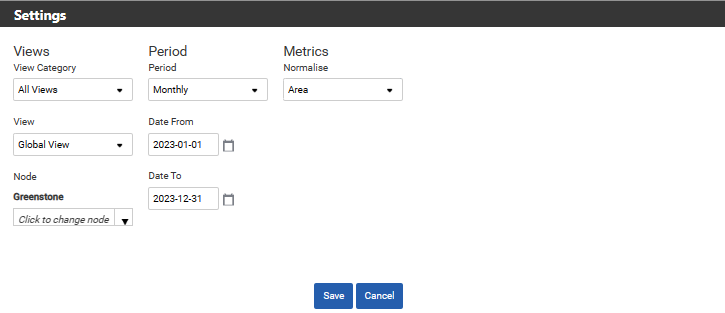
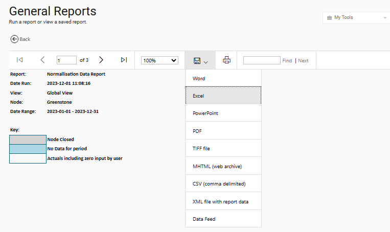

General Reports are not module specific and can therefore be found on the Homepage.
To run a report first select the report from the selection list using the left most dropdown. Give the report a name and select the format you would like the report saved in using the next two fields. Once this is done click Run Report.

This will open the ‘Change Settings’ screen where you can select the view and time-period required. Please note that only those parameters that are required for the report in question will be available. Please remember that some of the reports require the selection of a normalisation metric to return any data.

Once a report has been generated it can be exported to several formats such as Word and Excel. The report is stored on the system as a time-stamped Excel or PDF that can be accessed at any time.

This table lists all of the General Reports provided with a description of their contents.
| Report | Description |
| Actions Report | A list of the actions and associated targets for your organisation |
| Nodes and Data Sources Report | Lists all the nodes, data source types and data source names for your organisation |
| Normalisation Data Report | A detailed breakdown of the selected normalisation metric data by node and data source |
| Normalisation Data Uploaded Files Report | A breakdown of files uploaded to the normalisation section including the node, normalisation metric, file name, upload date etc. |
| Notes and Files Report | A list of the notes and files uploaded for your organisation |
| Risk Register Report | A list of the risks identified by your organisation |